In this example we consider a variation of the unsteady 2D channel flow problem considered elsewhere. In the previous example the flow was driven by the imposed wall motion. Here we shall consider the case in which the flow is driven by an applied traction 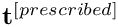 which balances the fluid stress so that
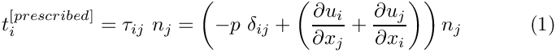
along the upper, horizontal boundary of the channel. Here 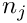 is the outward unit normal,  is the Kronecker delta and
is the Kronecker delta and  the stress tensor.
the stress tensor. oomph-lib provides traction elements that can be applied along a domain boundary to (weakly) impose the above boundary condition. The traction elements are used in the same way as flux-elements in the Poisson and unsteady heat examples. The section Comments and Exercises at the end of this documents provides more detail on the underlying theory and its implementation in oomph-lib.
The example problem
We consider the unsteady finite-Reynolds-number flow in a 2D channel that is driven by an applied traction along its upper boundary.
Here is a sketch of the problem: 
Sketch of the problem. The flow is governed by the 2D unsteady Navier-Stokes equations,
and
in the square domain
We apply the Dirichlet (no-slip) boundary condition 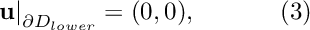 on the lower, stationary wall, 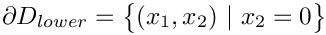 and the traction 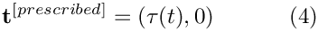 where 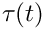 is a given function, on the upper boundary, 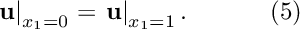 Initial conditions for the velocities are given by 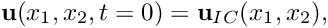 where 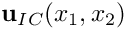 is given. |
![\[ Re\left(St\frac{\partial u_i}{\partial t} + u_j\frac{\partial u_i}{\partial x_j}\right) = - \frac{\partial p}{\partial x_i} + \frac{\partial }{\partial x_j} \left( \frac{\partial u_i}{\partial x_j} + \frac{\partial u_j}{\partial x_i} \right), \ \ \ \ \ \ \ \ \ \ (2) \]](form_5.png)
![\[ \frac{\partial u_i}{\partial x_i} = 0, \]](form_6.png)
![\[ D = \bigg\{(x_1,x_2) \ | \ x_1 \in [0,1], \ x_2 \in [0,1] \bigg\}. \]](form_7.png)
 . As in the
. As in the An exact, parallel-flow solution
We choose the prescribed traction 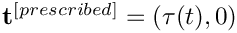 such that the parallel-flow solution
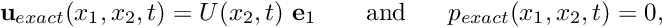
derived in the previous example remains valid. For this purpose we set
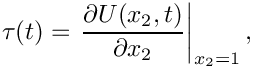
where
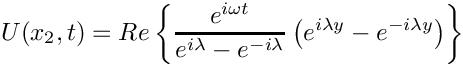
and
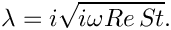
Results
The two animations below show the computed solutions obtained from a spatial discretisation with Taylor-Hood and Crouzeix-Raviart elements, respectively. In both cases we set  and specified the exact, time-periodic solution as the initial condition, i.e. 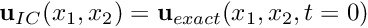 . The computed solutions agree extremely well with the exact solution throughout the simulation.
and specified the exact, time-periodic solution as the initial condition, i.e. 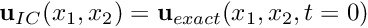 . The computed solutions agree extremely well with the exact solution throughout the simulation.

The global parameters
As usual, we use a namespace to define the problem parameters, the Reynolds number,  , and the Womersley number, 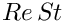 . We also provide two flags that indicate the length of the run (to allow a short run to be performed when the code is run as a self-test), and the initial condition (allowing a start from 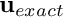 or an impulsive start in which the fluid is initially at rest).
, and the Womersley number, 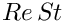 . We also provide two flags that indicate the length of the run (to allow a short run to be performed when the code is run as a self-test), and the initial condition (allowing a start from 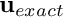 or an impulsive start in which the fluid is initially at rest).
The exact solution
We use a second namespace to define the time-periodic, parallel flow , and the traction required to make a solution of the problem.
The driver code
As in the previous example we use optional command line arguments to specify which mode the code is run in: Either as a short or a long run (indicated by the first command line argument being 0 or 1, respectively), and with initial conditions corresponding to an impulsive start or a start from the time-periodic exact solution (indicated by the second command line argument being 1 or 0, respectively). If no command line arguments are specified the code is run in the default mode, specified by parameter values assigned in the namespace Global_Parameters.
Next we set the physical and mesh parameters.
Finally we set up DocInfo objects and solve for both Taylor-Hood elements and Crouzeix-Raviart elements.
The problem class
The problem class remains similar to that in the previous example. Since we are no longer driving the flow by prescribing a time-periodic tangential velocity at the upper wall, the function actions_before_implicit_timestep() can remain empty.
The function create_traction_elements(...) (discussed in more detail below) creates the traction elements and "attaches" them to the specified boundary of the "bulk" mesh.
The traction boundary condition sets the pressure so the function fix_pressure(...) used in the previous example is no longer required. The problem's private member data contains pointers to the bulk and surface meshes and the output stream that we use to record the time-trace of the solution.
The problem constructor
We start by building the timestepper, determining its type from the class's second template argument, and pass a pointer to it to the Problem, using the function Problem::add_time_stepper_pt(...).
Next we build the periodic bulk mesh,
and the surface mesh,
and use the function create_traction_elements(...) to populate it with traction elements that attach themselves to the specified boundary (2) of the bulk mesh.
We add both sub-meshes to the Problem, using the function Problem::add_sub_mesh(...) and use the function Problem::build_global_mesh() to combine the sub-meshes into the Problem's single, global mesh.
We apply Dirichlet boundary conditions where required: No-slip on the stationary, lower wall, at  , parallel outflow on the left and right boundaries, at
, parallel outflow on the left and right boundaries, at  and
and  . No velocity boundary conditions are applied at the "upper" boundary, at 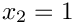, where the traction boundary condition is applied.
. No velocity boundary conditions are applied at the "upper" boundary, at 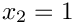, where the traction boundary condition is applied.
Next we pass the pointers to the Reynolds and Strouhal numbers,  ,
,  , to the bulk elements.
, to the bulk elements.
Finally we pass pointers to the applied traction function to the traction elements and assign the equation numbers.
Create traction elements
The creation of the traction elements is performed exactly as in the Poisson and unsteady heat problems with flux boundary conditions, discussed earlier. We obtain pointers to the "bulk" elements that are adjacent to the specified boundary of the bulk mesh from the function Mesh::boundary_element_pt(...), determine which of the elements' local coordinate(s) are constant along that boundary, and pass these parameters to the constructors of the traction elements which "attach" themselves to the appropriate face of the "bulk" element. Finally, we store the pointers to the newly created traction elements in the surface mesh.
\
Initial conditions
The function set_initial_conditions(...) remains the same as in the previous example.
Post processing
The function doc_solution(...) remains the same as in the previous example.
The timestepping loop
The function unsteady_run(...) remains the same as in the previous example, except that the default number of timesteps is increased to 500.
Comments and Exercises
How do the traction elements work?
The finite element solution of the Navier-Stokes equations is based on their weak form, obtained by weighting the stress-divergence form of the momentum equations
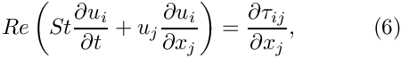
with the global test functions 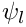, and integrating by parts to obtain the discrete residuals
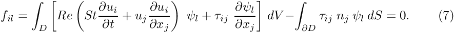
The volume integral in this residual is computed by the "bulk" Navier-Stokes elements. Recall that in the residual for the  -th momentum equation, the global test functions vanish on those parts of the domain boundary
-th momentum equation, the global test functions vanish on those parts of the domain boundary  where the -th velocity component is prescribed by Dirichlet boundary conditions. On such boundaries, the surface integral in (7) vanishes because 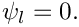 If the velocity on a certain part of the domain boundary, 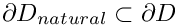, is not prescribed by Dirichlet boundary conditions and the surface integral over 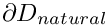 is not added to the discrete residual, the velocity degrees of freedom on those boundaries are regarded as unknowns and the "traction-free" (or natural) boundary condition
where the -th velocity component is prescribed by Dirichlet boundary conditions. On such boundaries, the surface integral in (7) vanishes because 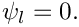 If the velocity on a certain part of the domain boundary, 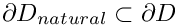, is not prescribed by Dirichlet boundary conditions and the surface integral over 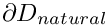 is not added to the discrete residual, the velocity degrees of freedom on those boundaries are regarded as unknowns and the "traction-free" (or natural) boundary condition
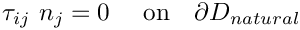
is "implied". Finally, traction boundary conditions of the form (1) may be applied along a part,  , of the domain boundary. The surface integral along this part of the domain boundary is given by
, of the domain boundary. The surface integral along this part of the domain boundary is given by
![\[ \int_{\partial D_{traction} } \tau_{ij} \ n_j \ \psi_l \ dS = \int_{\partial D_{traction} } t_i^{[prescribed]} \ \psi_l \ dS, \ \ \ \ \ \ \ \ \ \ (8) \]](form_42.png)
where 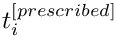 is given, and it is this contribution that the traction elements add to the residual of the momentum equations.
Exercises
- Pin the vertical velocity along the upper boundary, 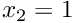, and compare the results against those obtained with the original version of the code. How does the change affect the velocity field? Why is pressure likely to change?
- Pin the horizontal velocity along the upper boundary, , and start the simulation with an impulsive start. Compare the results against those obtained with the original version of the code and explain your findings, referring to the theory provided in the section How do the traction elements work? .
- Run the code with an impulsive start and confirm that it takes longer for the solution to approach the time-periodic solution than in the previous case where the flow was driven by the wall motion. [Here are some animations of the velocity fields obtained following an impulsive start, for a discretisation with Taylor-Hood elements and Crouzeix-Raviart elements.]
- Investigate the effects of applying a non-zero value for 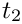 on the top boundary.
Source files for this tutorial
- The source files for this tutorial are located in the directory:
demo_drivers/navier_stokes/rayleigh_traction_channel/ - The driver code is:
demo_drivers/navier_stokes/rayleigh_traction_channel/rayleigh_traction_channel.cc
PDF file
A pdf version of this document is available.